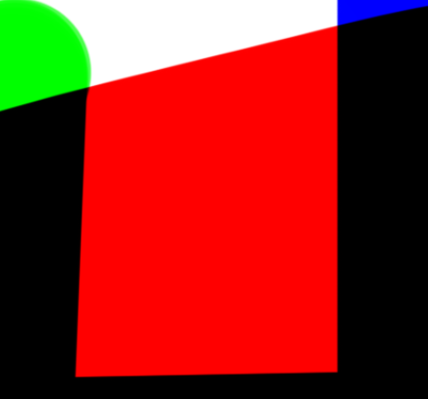

PS混合模式原理与示例
模式官方介绍
正片叠底
查看每个通道中的颜色信息，并将基色与混合色进行正片叠底。结果色总是较暗的颜色。任何颜色与黑色正片叠底产生黑色。任何颜色与白色正片叠底保持不变。当您用黑色或白色以外的颜色绘画时，绘画工具绘制的连续描边产生逐渐变暗的颜色。这与使用多个标记笔在图像上绘图的效果相似。
如图，重点是分通道，所有的模式混合都是基于通道的。即红色的底色，往上加蓝色和绿色结果都是黑色。因为RGB通道相互间的暗色都是黑色。当然，它们与黑色叠加也是黑色的。
滤色
查看每个通道的颜色信息，并将混合色的互补色与基色进行正片叠底。结果色总是较亮的颜色。用黑色过滤时颜色保持不变。用白色过滤将产生白色。此效果类似于多个摄影幻灯片在彼此之上投影。
正常
编辑或绘制每个像素，使其成为结果色。这是默认模式。（在处理位图图像或索引颜色图像时，“正常”模式也称为阈值。）
溶解
编辑或绘制每个像素，使其成为结果色。但是，根据任何像素位置的不透明度，结果色由基色或混合色的像素随机替换。
背后
仅在图层的透明部分编辑或绘画。此模式仅在取消选择了“锁定透明区域”的图层中使用，类似于在透明纸的透明区域背面绘画。
清除
编辑或绘制每个像素，使其透明。此模式可用于形状工具（当选定填充区域 时）、油漆桶工具 、画笔工具 、铅笔工具 、“填充”命令和“描边”命令。您必须位于取消选择了“锁定透明区域”的图层中才能使用此模式。
变暗
查看每个通道中的颜色信息，并选择基色或混合色中较暗的颜色作为结果色。将替换比混合色亮的像素，而比混合色暗的像素保持不变。
颜色加深
查看每个通道中的颜色信息，并通过增加二者之间的对比度使基色变暗以反映出混合色。与白色混合后不产生变化。
线性加深
查看每个通道中的颜色信息，并通过减小亮度使基色变暗以反映混合色。与白色混合后不产生变化。
变亮
查看每个通道中的颜色信息，并选择基色或混合色中较亮的颜色作为结果色。比混合色暗的像素被替换，比混合色亮的像素保持不变。
颜色减淡
查看每个通道中的颜色信息，并通过减小二者之间的对比度使基色变亮以反映出混合色。与黑色混合则不发生变化。
线性减淡（添加）
查看每个通道中的颜色信息，并通过增加亮度使基色变亮以反映混合色。与黑色混合则不发生变化。
叠加
对颜色进行正片叠底或过滤，具体取决于基色。图案或颜色在现有像素上叠加，同时保留基色的明暗对比。不替换基色，但基色与混合色相混以反映原色的亮度或暗度。
柔光
使颜色变暗或变亮，具体取决于混合色。此效果与发散的聚光灯照在图像上相似。如果混合色（光源）比 50% 灰色亮，则图像变亮，就像被减淡了一样。如果混合色（光源）比 50% 灰色暗，则图像变暗，就像被加深了一样。使用纯黑色或纯白色上色，可以产生明显变暗或变亮的区域，但不能生成纯黑色或纯白色。
强光
对颜色进行正片叠底或过滤，具体取决于混合色。此效果与耀眼的聚光灯照在图像上相似。如果混合色（光源）比 50% 灰色亮，则图像变亮，就像过滤后的效果。这对于向图像添加高光非常有用。如果混合色（光源）比 50% 灰色暗，则图像变暗，就像正片叠底后的效果。这对于向图像添加阴影非常有用。用纯黑色或纯白色上色会产生纯黑色或纯白色。
亮光
通过增加或减小对比度来加深或减淡颜色，具体取决于混合色。如果混合色（光源）比 50% 灰色亮，则通过减小对比度使图像变亮。如果混合色比 50% 灰色暗，则通过增加对比度使图像变暗。
线性光
通过减小或增加亮度来加深或减淡颜色，具体取决于混合色。如果混合色（光源）比 50% 灰色亮，则通过增加亮度使图像变亮。如果混合色比 50% 灰色暗，则通过减小亮度使图像变暗。
点光
根据混合色替换颜色。如果混合色（光源）比 50% 灰色亮，则替换比混合色暗的像素，而不改变比混合色亮的像素。如果混合色比 50% 灰色暗，则替换比混合色亮的像素，而比混合色暗的像素保持不变。这对于向图像添加特殊效果非常有用。
实色混合
将混合颜色的红色、绿色和蓝色通道值添加到基色的 RGB 值。如果通道的结果总和大于或等于 255，则值为 255；如果小于 255，则值为 0。因此，所有混合像素的红色、绿色和蓝色通道值要么是 0，要么是 255。此模式会将所有像素更改为主要的加色（红色、绿色或蓝色）、白色或黑色。
差值
查看每个通道中的颜色信息，并从基色中减去混合色，或从混合色中减去基色，具体取决于哪一个颜色的亮度值更大。与白色混合将反转基色值；与黑色混合则不产生变化。
排除
创建一种与“差值”模式相似但对比度更低的效果。与白色混合将反转基色值。与黑色混合则不发生变化。
减去
查看每个通道中的颜色信息，并从基色中减去混合色。在 8 位和 16 位图像中，任何生成的负片值都会剪切为零。
划分
查看每个通道中的颜色信息，并从基色中划分混合色。
色相
用基色的明亮度和饱和度以及混合色的色相创建结果色。
饱和度
用基色的明亮度和色相以及混合色的饱和度创建结果色。在无 (0) 饱和度（灰度）区域上用此模式绘画不会产生任何变化。
颜色
用基色的明亮度以及混合色的色相和饱和度创建结果色。这样可以保留图像中的灰阶，并且对于给单色图像上色和给彩色图像着色都会非常有用。
明度
用基色的色相和饱和度以及混合色的明亮度创建结果色。此模式创建与“颜色”模式相反的效果。
浅色
比较混合色和基色的所有通道值的总和并显示值较大的颜色。“浅色”不会生成第三种颜色（可以通过“变亮”混合获得），因为它将从基色和混合色中选取最大的通道值来创建结果色。
深色
比较混合色和基色的所有通道值的总和并显示值较小的颜色。“深色”不会生成第三种颜色（可以通过“变暗”混合获得），因为它将从基色和混合色中选取最小的通道值来创建结果色。
公式
注释：
1.混合模式的数学计算公式，另外还介绍了不透明度。
2.这些公式仅适用于RGB图像，对于Lab颜色图像而言，这些公式将不再适用。
3.在公式中——
A 代表下面图层的颜色值，也称为基色；
B 代表上面图层的颜色值，也成为混合色；
C 代表混合图层的颜色值，也称为结果色；
D 表示该层的透明度。
详细举例推理
我们先建立两个图层：
当前选中层（Active Layer）为A层，或称“混合色 blend color”
下层（Background Layer）为B层，或称“基色 base color”，两者混合得到“结果色 Result color”
混合模式的基本原理
取A层任意一个像素a [R1, G1, B1]，与B层对应位置的像素b [R2, G2, B2] 进行数学运算，得到c [R3, G3, B3]
- R1 某种运算 R2 = R3
- G1 某种运算 G2 = G3
- B1 某种运算 B2 = B3
A、B两层所有像素都独立进行同样的运算，即得到混合后的结果C，即新的A层（注意虽然A层缩略图没有变，但直方图已经变了），而B保持不变
举一个简单例子，PS默认的图层混合模式是“正常”，在不透明度为100%时，
- R1 正常 R2 = R1
- G1 正常 G2 = G1
- B1 正常 B2 = B1
也就是说，“正常”模式下，A层在B层之上，看到的只有A层，看不到B层
混合模式的分类
一般系：正常、溶解
变暗系：变暗、深色、正片叠底、颜色加深、线性加深
变亮系：变亮、浅色、滤色、颜色减淡、线性减淡
对比系：叠加、强光、柔光、亮光、线性光、点光、实色混合
-
- 该组特点是让亮的更亮，暗的更暗，每一个“对比系”的混合模式都可看作“变暗系”和“变亮系”的结合，如“叠加”是对较暗的像素进行“正片叠底”，对较亮的像素进行“滤色”
负片系：差值、排除
相消系：减去、划分
HSL系：色相、饱和度、颜色、明度
混合模式彼此之间的联系
-
对于大多数混合模式，图层“不透明度”和“填充度”对混合效果影响是一样的，也就是说，60%的不透明度，与60%的填充度，得到的效果一样；但以下8种混合模式是例外
- 颜色加深、颜色减淡
- 线性加深、线性减淡
- 亮光、线性光、实色混合
- 差值
-
以下5组混合模式是相反对应关系（从后面的公式就可以看出）
- 变暗 - 变亮
- 深色 - 浅色
- 正片叠底 - 滤色
- 颜色加深 - 颜色减淡
- 线性加深 - 线性减淡
-
具有“互逆”关系的混合模式有两组，举例，A层在上，对A“叠加”；B层在上，对B“强光”：两种情况得到的效果是一样的
- 叠加 强光
- 颜色
明度
每一种混合模式的运算方法
当通道位深度为8位时，R、G、B三通道数值范围在0到255，我们除以255，得到0~1范围内的数值
我们用下图所示的两个100像素的图层做实验
A层有一个颜色， [R, G, B]值分别是 [102, 153, 204]，即[0.4, 0.6, 0.8]
B层有两个颜色，[0, 51, 102] 和 [255, 204, 153]，即 [0, 0.2, 0.4] 和 [1, 0.8, 0.6]
选中A层，调节混合模式
I 正常系
正常 Normal
设不透明度为n
c = n***a + (1-n)****b***
当不透明度为100%
c = a
溶解 Dissolve
对每个像素而言，其结果色是基色或混合色的随机值，取决于其“不透明度”：“不透明度”高时，更多像素取自当前层；低时，更多像素取自背景层
II 变暗和变亮系
变暗 Darken
c = min(a,b) 逐通道进行运算
B: 颜色1 [0, 0.2, 0.4] 颜色2 [1, 0.8, 0.6]
A: [0.4, 0.6, 0.8]
C: 颜色1 [0, 0.2, 0.4] 颜色2 [0.4, 0.6, 0.6]
得到变暗的效果
变亮 Lighten
*c = max(a,b)* 逐通道进行运算
B: 颜色1 [0, 0.2, 0.4] 颜色2 [1, 0.8, 0.6]
A: [0.4, 0.6, 0.8]
C: 颜色1 [0.4, 0.6, 0.8] 颜色2 [1, 0.8, 0.8]
得到变亮的效果
深色 Darker Color
c = min(a, b) 三通道整体进行运算，不会产生新的颜色
B: 颜色1 [0, 0.2, 0.4] 颜色2 [1, 0.8, 0.6]
A: [0.4, 0.6, 0.8]
C: 颜色1 [0, 0.2, 0.4] 颜色2 [0.4, 0.6, 0.8]
该混合模式不会产生新的颜色，注意与“变暗”的区别
浅色 Lighter Color
c = max(a, b) 三通道整体进行运算*，不会产生新的颜色*
B: 颜色1 [0, 0.2, 0.4] 颜色2 [1, 0.8, 0.6]
A: [0.4, 0.6, 0.8]
C: 颜色1 [0.4, 0.6, 0.8] 颜色2 [1, 0.8, 0.6]
该混合模式不会产生新的颜色，注意与“变亮”的区别
正片叠底 Multiply
c = a*b 逐通道进行运算
B: 颜色1 [0, 0.2, 0.4] 颜色2 [1, 0.8, 0.6]
A: [0.4, 0.6, 0.8]
C: 颜色1 [0, 0.12, 0.32] 颜色2 [0.4, 0.48, 0.48]
常用的加深模式，用于产生阴影、去除白色和其他浅色。如同将所有的图层都叠在一起，上方一束光投下来到屏幕上；“颜色加深”和“线性加深”比“正片叠底”效果更为强烈
任何颜色和黑色混合结果都是黑的，任何颜色跟白色混合结果都是原来的颜色
“正片叠底”即所谓“减色”或“CMYK”模式，现实中相当于用染料、水彩笔绘画效果，如图所示
滤色 Screen
***c = 1 − (1−a)*(1−b)***逐通道进行运算
B: 颜色1 [0, 0.2, 0.4] 颜色2 [1, 0.8, 0.6]
A: [0.4, 0.6, 0.8]
C: 颜色1 [0.4, 0.68, 0.88] 颜色2 [1, 0.92, 0.92]
常用的减淡方法，产生发光效果。如同将所有图层分开摆放，各有一束光通过各图层，汇聚在一块屏幕上
基色或混合色为白色时，结果会是白色；任何颜色和黑色混合，结果仍原来的颜色
“滤色”即所谓“加色”模式，现实中相当于发光体发光的叠加效果，如图所示
颜色加深 Color Burn
c = 1 − (1−b)/a 逐通道进行运算
B: 颜色1 [0, 0.2, 0.4] 颜色2 [1, 0.8, 0.6]
A: [0.4, 0.6, 0.8]
C: 颜色1 [0, 0, 0.25] 颜色2 [1, 0.67, 0.5]
得到的效果比“正片叠底”更深，中调更高饱和，高光减弱
任何颜色跟白色（B=1）混合结果都是白色
颜色减淡 Color Dodge
***c = b / (1−a)***逐通道进行运算
B: 颜色1 [0, 0.2, 0.4] 颜色2 [1, 0.8, 0.6]
A: [0.4, 0.6, 0.8]
C: 颜色1 [0, 0.5, 1] 颜色2 [1, 1, 1]
得到的效果比“滤色”更亮，色彩对比更加强烈，中调更高饱和，高光增强
任何颜色跟黑色（B=0）混合结果都是黑色
线性加深 Linear Burn
c = a + b − 1 逐通道进行运算
B: 颜色1 [0, 0.2, 0.4] 颜色2 [1, 0.8, 0.6]
A: [0.4, 0.6, 0.8]
C: 颜色1 [0, 0, 0.2] 颜色2 [0.4, 0.4, 0.4]
得到的效果比“颜色加深”更深，比颜色加深饱和度低
任何颜色跟白色（B=1）混合结果都是原来的颜色
线性减淡 Linear Dodge
c = a+b 逐通道进行运算
B: 颜色1 [0, 0.2, 0.4] 颜色2 [1, 0.8, 0.6]
A: [0.4, 0.6, 0.8]
C: 颜色1 [0.4, 0.8, 1] 颜色2 [1, 1, 1]
得到的效果比“颜色减淡”更亮，但对比稍弱
任何颜色跟黑色（B=0）混合结果都是原来的颜色
III 对比系
该组特点是让亮的更亮，暗的更暗，每一个“对比系”的混合模式都可看作“变暗系”和“变亮系”的结合，如“叠加”是对较暗的像素进行“正片叠底”，对较亮的像素进行“滤色”
叠加 Overlay
逐通道进行运算
*若 b <= 0.5: c = 2ab*
*若 b > 0.5: c = 1 - 2(1-a)(1-b)*
B: 颜色1 [0, 0.2, 0.4] 颜色2 [1, 0.8, 0.6]
A: [0.4, 0.6, 0.8]
C: 颜色1 [0, 0.24, 0.64] 颜色2[1, 0.84, 0.84]
类似于 “正片叠底”+“滤色”的结合，但效果更柔和
A层在上，对A“叠加”；B层在上，对B“强光”：两种情况得到的效果是一样的
强光 Hard Light
逐通道进行运算
*若 a <= 0.5: c = 2ab*
*若 a > 0.5: c = 1 - 2(1-a)(1-b)*
B: 颜色1 [0, 0.2, 0.4] 颜色2 [1, 0.8, 0.6]
A: [0.4, 0.6, 0.8]
C: 颜色1 [0, 0.36, 0.76] 颜色2 [0.8, 0.84, 0.84]
类似于 “正片叠底”+“滤色”的结合，但效果更柔和
A层在上，对A“叠加”；B层在上，对B“强光”：两种情况得到的效果是一样的
柔光 Soft Light
逐通道进行运算
*若 a <= 0.5, c = 2ab + (1-2a)*
*若 a > 0.5, c = 2b(1-a) + (2a-1)*
B: 颜色1 [0, 0.2, 0.4] 颜色2 [1, 0.8, 0.6]
A: [0.4, 0.6, 0.8]
C: 颜色1 [0, 0.25, 0.54] 颜色2 [1, 0.82, 0.71]

效果类似于“叠加”，但效果更柔和，有透明的光线和阴影
类似于 “浅色”+“深色”的结合
亮光 Vivid Light
逐通道进行运算，近似公式
*若 a <= 0.5, c = 1 + (b-1)/2a*
*若 a > 0.5, c = b / 2(1-a)*
B: 颜色1 [0, 0.2, 0.4] 颜色2 [1, 0.8, 0.6]
A: [0.4, 0.6, 0.8]
C: 颜色1 [0, 0.25, 1] 颜色2 [1, 0.996, 1]
类似于“实色混合”，但效果通常更加剧烈
类似于 “颜色减淡”+“颜色加深”的结合
线性光 Linear Light
*c = b + 2a -1* 逐通道进行运算，近似公式
B: 颜色1 [0, 0.2, 0.4] 颜色2 [1, 0.8, 0.6]
A: [0.4, 0.6, 0.8]
C: 颜色1 [0, 0.4, 0.996] 颜色2 [0.8, 0.996, 1]
类似于“亮光”，但效果通常更加剧烈
类似于 “线性加深”+“线性减淡”的结果
点光 Pin Light
逐通道进行运算
*若 a > 0.5, c = max ( 2(a-0.5) , b )*
*若 a <= 0.5, c = min ( 2a , b )*
B: 颜色1 [0, 0.2, 0.4] 颜色2 [1, 0.8, 0.6]
A: [0.4, 0.6, 0.8]
C: 颜色1 [0, 0.2, 0.6] 颜色2 [0.796, 0.8, 0.6]
该混合模式较为强烈，容易形成色块色斑和噪点
类似于 “变亮”+“变暗”的结合
实色混合 Hard Mix
*若 a+b >= 1, c = 1; 否则 c=0* 逐通道进行运算
B: 颜色1 [0, 0.2, 0.4] 颜色2 [1, 0.8, 0.6]
A: [0.4, 0.6, 0.8]
C: 颜色1 [0, 0, 1] 颜色2 [1, 1, 1]
结果只有8个颜色：R、G、B、C、M、Y 、K、White
如果“填充度”不为100，结果色会多于8
IV 负片系
差值 Difference
c = |b - a| 逐通道进行运算
B: 颜色1 [0, 0.2, 0.4] 颜色2 [1, 0.8, 0.6]
A: [0.4, 0.6, 0.8]
C: 颜色1 [0.4, 0.4, 0.4] 颜色2 [0.6, 0.2, 0.2]
会有一定负片效果
排除 Exclusion
c = a + b - 2ab 逐通道进行运算
B: 颜色1 [0, 0.2, 0.4] 颜色2 [1, 0.8, 0.6]
A: [0.4, 0.6, 0.8]
C: 颜色1 [0.4, 0.56, 0.56] 颜色2 [0.6, 0.44, 0.44]
会有一定负片效果
V 相消系
减去Subtract
c = b−a逐通道进行运算
B: 颜色1 [0, 0.2, 0.4] 颜色2 [1, 0.8, 0.6]
A: [0.4, 0.6, 0.8]
C: 颜色1 [0, 0, 0] 颜色2 [0.6, 0.2, 0]
变深效果
常结合“应用图像”，用于高低频法调色
划分Divide
*c = b/a* 逐通道进行运算
B: 颜色1 [0, 0.2, 0.4] 颜色2 [1, 0.8, 0.6]
A: [0.4, 0.6, 0.8]
C: 颜色1 [0, 0.33, 0.5] 颜色2 [1, 1, 0.75]
变亮效果
汇总在一张A4纸上
参考文献
- Adobe中文官网
- Photoshop图层混合模式详解
- 另外一篇知乎文章，由于写的时候忘了，现在实在找不到了。。要是引用部分原作者来了请找我claim。